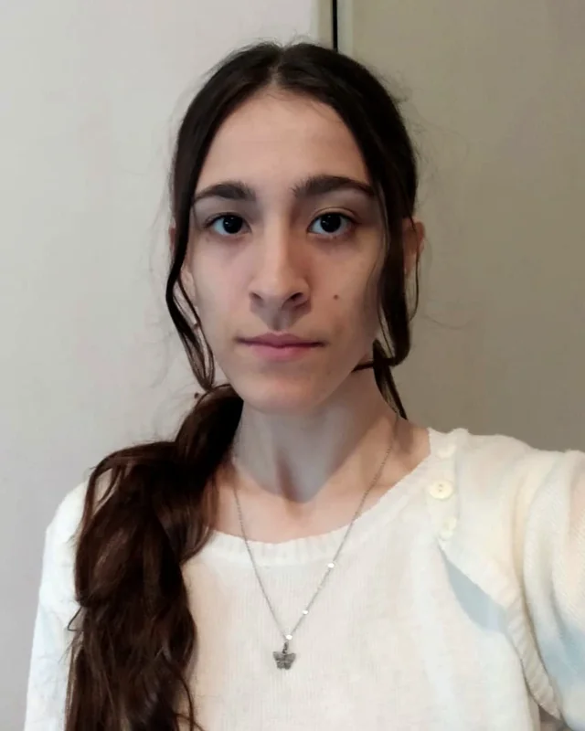
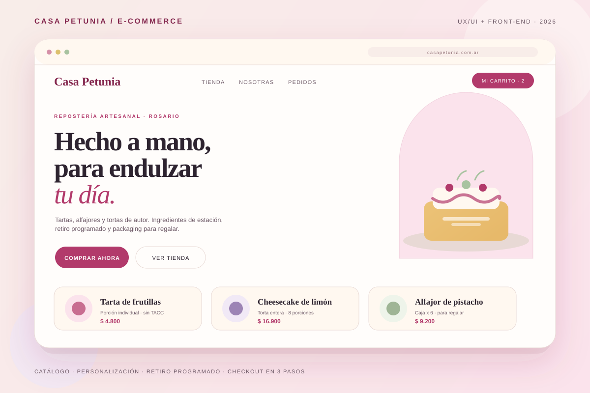
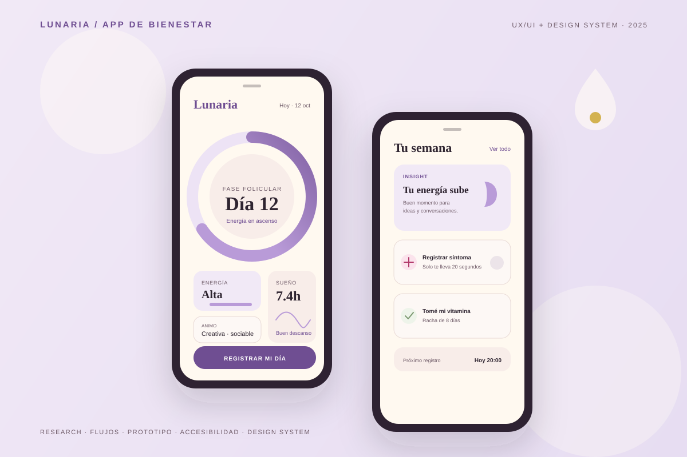
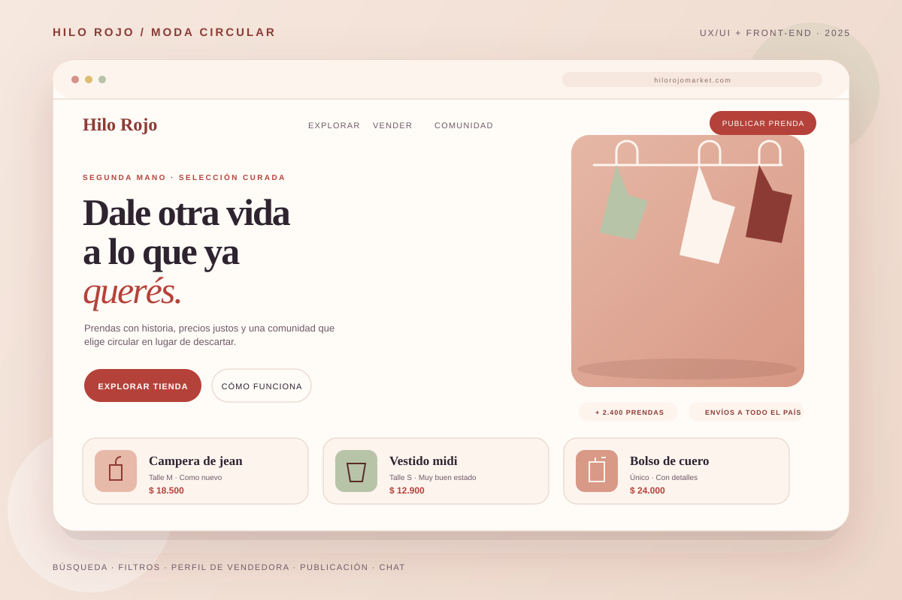
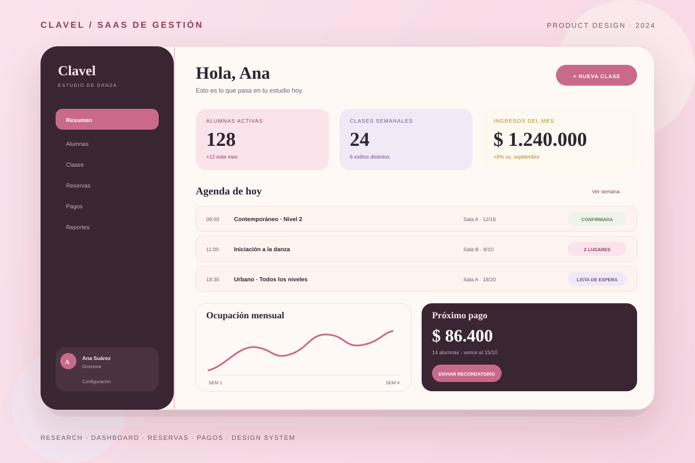

Escuchar antes de diseñar
Entender el problema, las personas y el contexto. Las suposiciones salen caras.
Portfolio 2026 / UX/UI + Front-end
Soy Cecilia Velzi, diseñadora UX/UI y front-end. Investigo, diseño y construyo interfaces cálidas, claras y accesibles para marcas que quieren conectar de verdad con las personas.

Cecilia Velzi
UX/UI + Front-end · 2026
Sobre mí / 01
Soy Cecilia, diseñadora UX/UI y front-end en Entre Ríos. Me mueve esa instancia en la que una idea todavía es una conversación y, un rato después, ya se puede tocar: un flujo que se entiende, una pantalla que respira, una marca que se siente propia.
Trabajo el proyecto completo: escucho, investigo, ordeno la información, prototipo, pruebo y construyo. Me importa que el diseño no se quede en una imagen linda, sino que funcione, sea accesible y pueda sostenerse en el tiempo.
Disfruto especialmente los proyectos con sensibilidad por lo artesanal, lo editorial y lo humano. Casa Petunia, mi caso de estudio, nació justamente de esa búsqueda: que comprar un postre para regalar se sienta tan cálido como recibirlo.
La buena experiencia no se nota: se siente.
Mi principio de trabajo
Mi forma de trabajar
Entender el problema, las personas y el contexto. Las suposiciones salen caras.
Arquitectura de información, jerarquía visual y un sistema que escala sin perder carácter.
Código accesible, performance y pruebas. El diseño sigue vivo después del handoff.
Ceci
Entre Ríos · 2026
En números / 02
Una selección de proyectos, disciplinas y herramientas que muestran cómo trabajo.
Capacidades / 03
Trabajo en el recorrido completo del producto: entender, diseñar y construir. Me gusta moverse entre la investigación y el código sin perder el hilo.
Entrevistas, benchmark, personas, mapas de experiencia y definición del problema.
Arquitectura, wireframes, prototipos, sistemas visuales y detalle de interacción.
Interfaces responsive y accesibles con HTML, CSS, JavaScript y Tailwind.
Trabajo seleccionado / 04
Cuatro conceptos que exploran lo artesanal, el bienestar, el regalo y la identidad. Uno de ellos, documentado de punta a punta.

Caso destacadoTienda online para una repostería artesanal de Entre Ríos. El desafío: que elegir un postre para regalar sea tan simple y confiable como elegir un café, sin perder el calor de lo hecho a mano.
Resultado · Checkout más corto, retiro visible y un sistema visual que sostiene la marca.

App de rituales y bienestar para ordenar rutinas de sueño, journaling y pausas. Una interfaz suave para un hábito difícil de sostener.
Resultado · Flujo de 3 pasos y recordatorios amables.

Tienda de joyería artesanal con foco en regalos. La marca necesitaba contar el valor del trabajo manual sin subir el precio como barrera.
Resultado · Guía de regalo y fichas de producto más claras.

Identidad y landing para una floristería de autor. La suscripción semanal como excusa para convertir una compra ocasional en un hábito.
Resultado · Sistema editorial y suscripción visible.
Trayectoria / 05
Mi recorrido mezcla formación autodidacta, diseño gráfico y proyectos reales. Cada etapa me dejó una herramienta nueva y una forma más honesta de mirar el trabajo.
Actualmente
Disponible para proyectos freelance, prácticas y oportunidades full-time en UX/UI o front-end.
HablemosProyectos independientes · Entre Ríos
Diseño y desarrollo de sitios y tiendas para marcas pequeñas, desde la investigación y la identidad hasta la implementación y el deploy.
Práctica final UX/UI · 2026
Diseño de este portfolio y del caso de estudio Casa Petunia: research, benchmark, wireframes, sistema visual, prototipo y desarrollo.
Formación aplicada · Proyectos reales
Research, arquitectura, wireframes, design systems, accesibilidad y test de usabilidad.
Formación autodidacta · Base técnica
Maquetado semántico, responsive, componentes, performance y accesibilidad web.
Formación + práctica freelance
Marcas, piezas editoriales, packaging y primeras landing pages para emprendimientos.
Caso de estudio / 06
Un e-commerce conceptual para una repostería artesanal. El reto no era solo vender: era traducir el cuidado de lo hecho a mano en una experiencia digital confiable, simple y con carácter.
Contacto / 07
Si tenés un proyecto, una marca que quiere crecer o un equipo donde pueda aportar, escribime. Me interesa trabajar en cosas que se hagan con cuidado.
Respondo dentro de las 48 h. Si preferís, también podés encontrarme en LinkedIn.
linkedin.com/in/ceciliavelzi